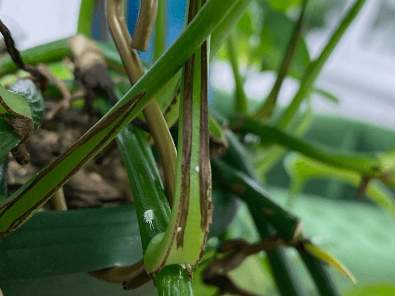
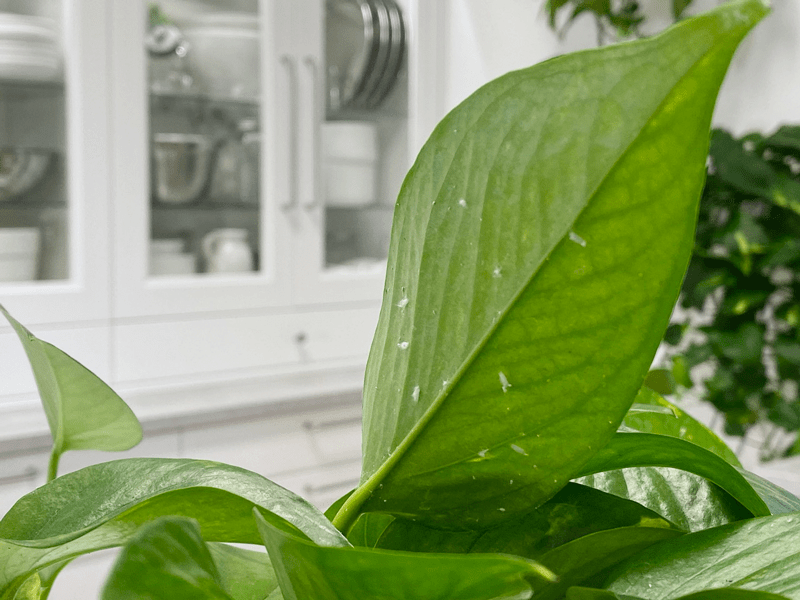

Mealybugs | Plant Pests
Oh, good ol’ mealybugs… a houseplant’s nemesis! When I first got into houseplants, I was very lucky, until I was no longer lucky. It’s easy to get cocky and think that your house and your plants are safe from such critters… but they’re not. Sorry. I am not here to sugarcoat things. Mealybugs are just par for the course.

Did you know that mealybugs are part of the scale family that lives on the stems, undersides of leaves, and on the nodes of houseplants? They appear white and cottony. Houseplants are especially vulnerable because year-round mild temperatures favor mealybug populations, and indoor plants are usually not exposed to the natural enemies that often keep mealybugs under control outdoors.
The key to having pest-free plants is to take care of them from the get-go. Inspect and clean them on a regular basis. You will then have the upper hand over a possible pest infection! Truth be told, getting rid of mealybugs on houseplants can be tough, but it’s not impossible! The best line of defense is being proactive, just like we ought to be with our health. If you ignore your plants, if you ignore your health… don’t be alarmed when and if disease sets in. Okay, let’s chat about what to look for and what to do about it should a mealybug come for a visit.
Appearance
- Soft-bodied insects, about 3/16 inch long.
- White, powdery, waxy secretions cover their bodies.
- Have white filaments sticking out along the sides of the body and at the tail end.
Damage
- Use sucking mouthparts to feed on plant sap.
- Heavy feeding yellows leaves, stunts plants, and causes plants to wilt.
Detection
- Watch for discolored leaves.
- Watch for honeydew (a shiny, sticky substance).
- Examine plants:
- Along veins on the undersides of leaves.
- At the point where leaves join stems.
- They hang out between touching leaves.
- Some mealybugs may also be found below the soil, where they feed on roots.
Solution and Maintenance
- Wash your hands and any tools after working with infested plants to avoid cross-contamination.
- For the first pass, spray the plant with water in the tub, shower, or outside with a hose. If spraying the plant down in the house, be sure to clean that area before introducing yourself or other plants to it.
- There are many different approaches when it comes to eradicating plant pests. Here are some treatments that I personally use. Treat with rubbing alcohol, neem oil, and hydrogen peroxide treatment.

The plant is a pothos, but these can attack other plants.
© AmieSue.com